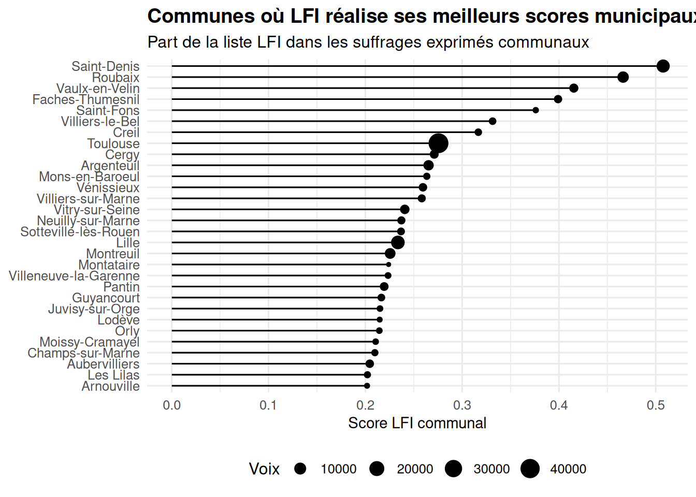
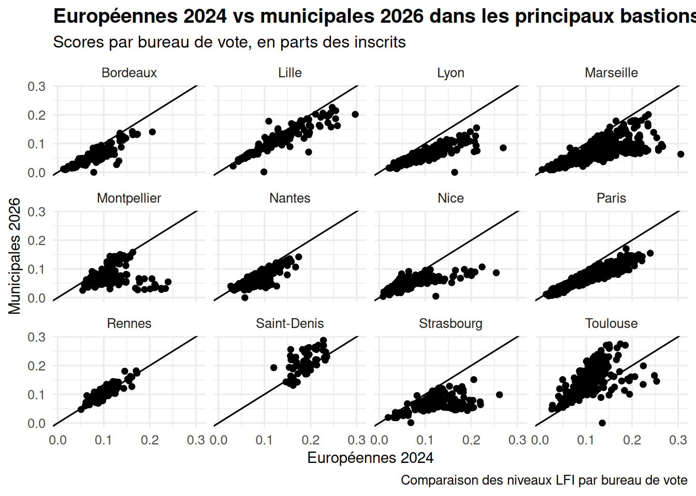
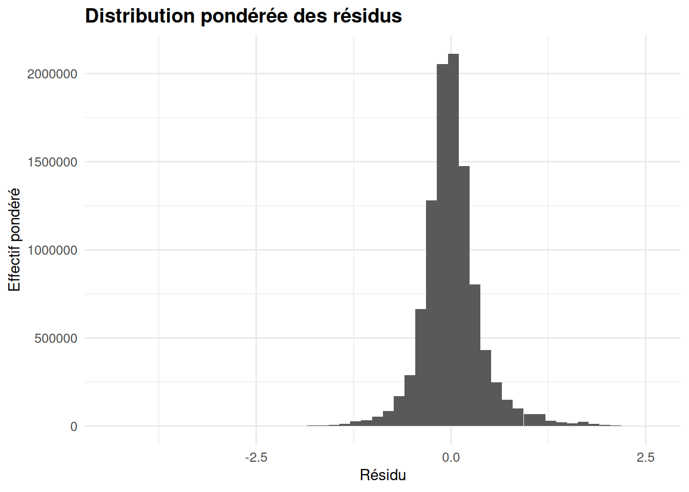
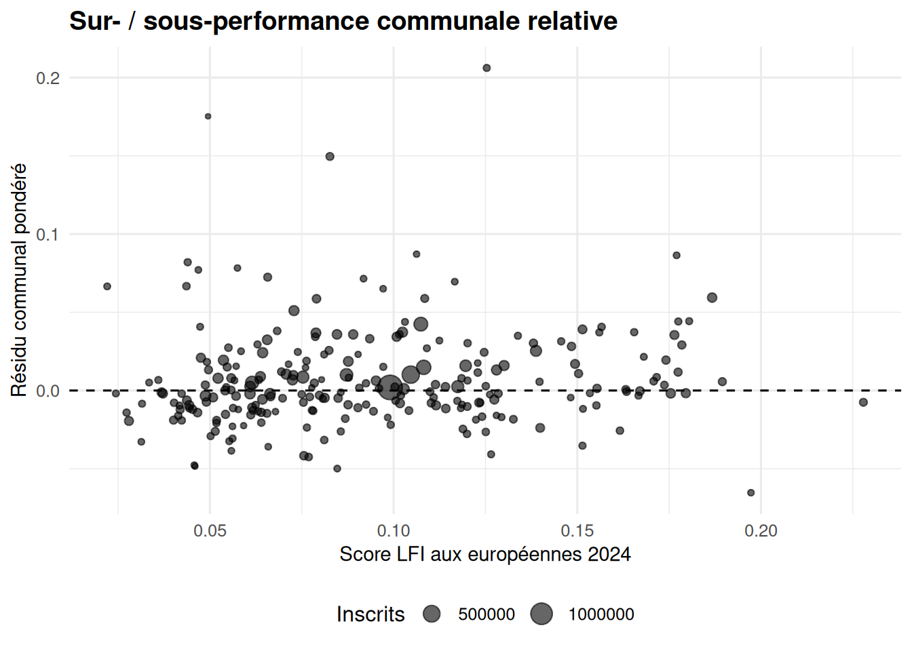
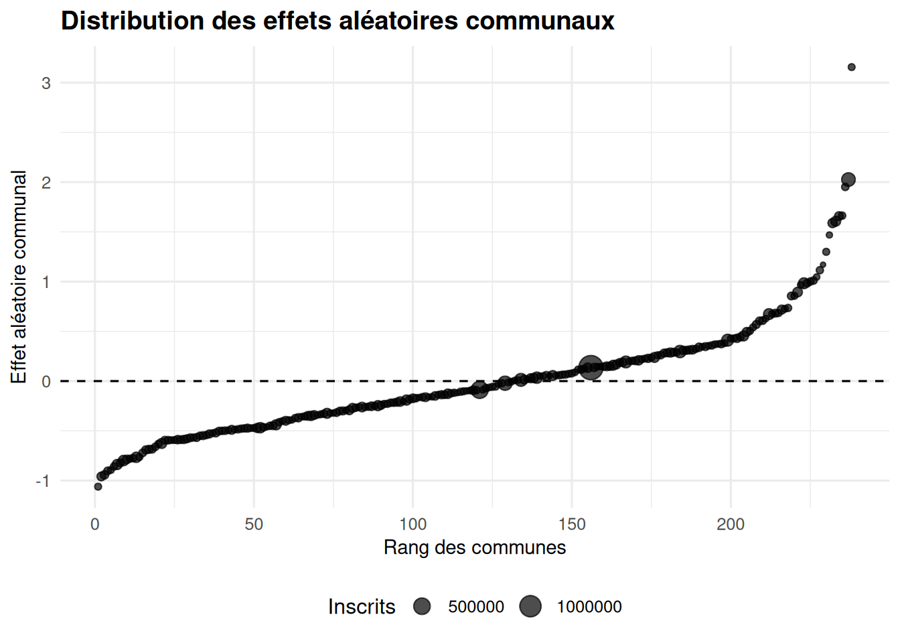
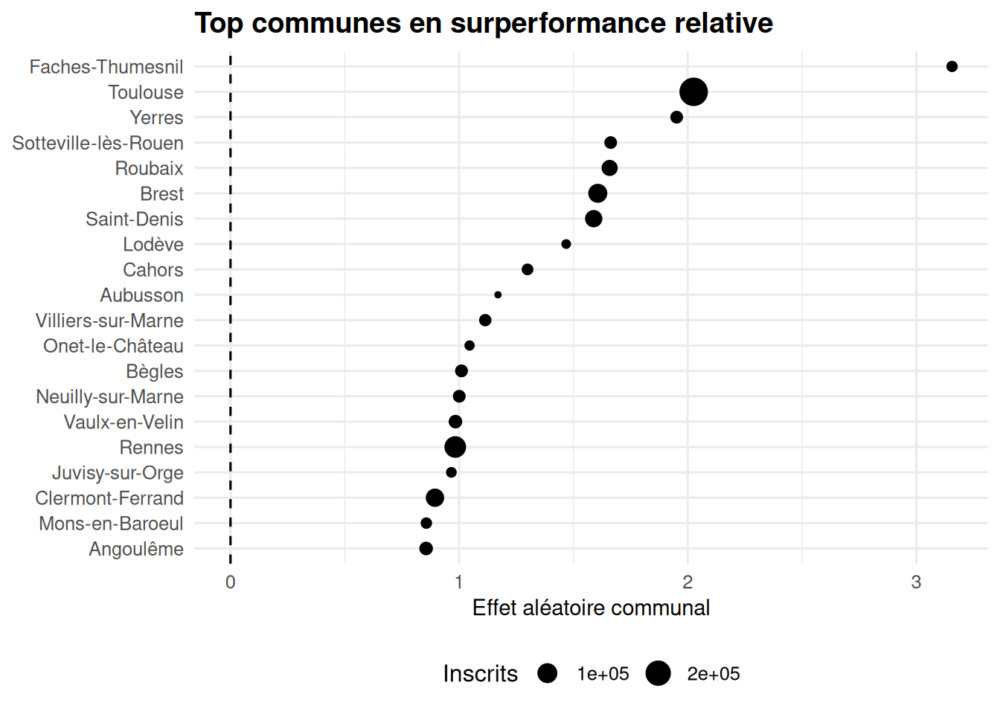
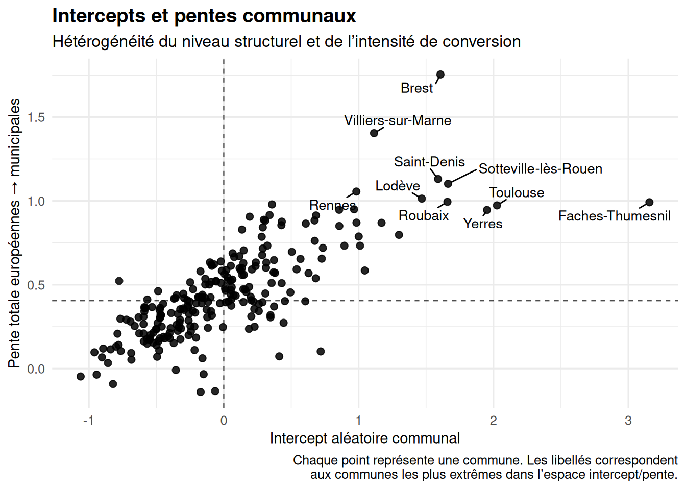

Code
p_intro_top
Les résultats des élections municipales de 2026 ont souvent été interprétés comme le signe d’une progression significative de La France insoumise (LFI). Cette lecture repose principalement sur la comparaison avec les élections municipales précédentes, qui fait apparaître des hausses de scores dans un certain nombre de communes.
p_intro_top
Certains résultats ont été particulièrement visibles en raison de leur ampleur. La victoire dès le premier tour à Saint-Denis, la mise en ballotage du maire sortant à Lille, ou encore la prise de pouvoir sur l’électorat de gauche à Toulouse ont été les carburants de ce narratif de “vague LFI”.
Cette interprétation soulève toutefois des difficultés, tant en termes de base de comparaison que de validité analytique.
Tout d’abord, comparer directement les municipales de 2026 aux municipales antérieures revient à ignorer un fait élémentaire : les deux scrutins ne partagent ni les mêmes structures d’offre politique, ni les mêmes logiques de mobilisation.
Un argument central tient au positionnement de LFI entre les deux cycles électoraux. En 2020, le mouvement a largement marginalisé l’échelon municipal dans sa stratégie, privilégiant un ancrage national structuré autour de la figure de son leader, qui qualifiait lui-même les élections municipales de « tambouille locale ». Cette orientation s’est traduite par une présence inégale, souvent indirecte, et par une faible structuration de l’offre partisane à l’échelle communale.
À l’inverse, le cycle 2026 marque un investissement explicite dans le champ municipal. LFI y développe un discours articulé autour du « communalisme », construit des candidatures identifiées et engage, dans plusieurs configurations locales, des figures nationales du mouvement. Certaines communes sont explicitement désignées comme des cibles électorales prioritaires, traduisant une stratégie d’implantation territoriale assumée.
Dans ces conditions, comparer les résultats municipaux de 2026 à ceux de 2020 revient moins à mesurer une dynamique électorale qu’à confronter deux états distincts de l’organisation partisane : un parti faiblement investi dans le champ local d’un côté, un parti engagé dans une stratégie d’ancrage territorial de l’autre.
Cette comparaison ne permet pas de répondre directement à la question suivante :
Elle répond en réalité à une question différente :
La réponse découle en grande partie des conditions mêmes de la comparaison.
La question du point de comparaison est centrale. Les élections municipales ne constituent pas un scrutin national homogène, mais une agrégation de configurations locales hétérogènes. À ce titre, la comparaison directe avec un scrutin national antérieur, sans précaution méthodologique, peut en effet prêter à discussion.
L’analyse proposée ne consiste pas à comparer directement deux scrutins de nature différente, ni à en déduire directement une dynamique politique globale. Elle repose sur un usage plus restreint et plus précis des résultats des élections européennes de 2024.
Elles sont mobilisées comme point de référence local, et non comme équivalent du vote municipal.
Les élections européennes présentent en effet plusieurs propriétés qui en font un instrument pertinent pour la construction d’un contrefactuel :
elles offrent une mesure récente et homogène du rapport de force électoral, à l’échelle fine du territoire. Contrairement aux scrutins locaux, elles reposent sur une offre politique nationale stabilisée et comparable d’un territoire à l’autre.
elles sont observées à une granularité compatible avec celle des bureaux de vote, ce qui permet d’établir une correspondance directe avec les résultats municipaux, sans recourir à des agrégations grossières.
elles constituent une approximation du potentiel électoral local d’une formation politique, indépendamment des configurations spécifiques du scrutin municipal (alliances, candidatures, fragmentation de l’offre).
Dans ce cadre, le score aux européennes n’est pas interprété comme un équivalent du score municipal, mais comme une variable explicative permettant de définir un niveau attendu. L’objectif est d’évaluer si, à potentiel électoral donné, le résultat municipal s’écarte systématiquement du niveau attendu.
Cette distinction est essentielle. Elle permet de dépasser une critique fréquente, consistant à souligner l’incomparabilité des scrutins pour invalider toute analyse de leur relation. Une telle critique serait pertinente dans le cadre d’une comparaison directe des niveaux électoraux. Elle ne l’est pas dans le cadre d’une approche conditionnelle, où l’un des scrutins est utilisé comme référence pour expliquer la variation de l’autre.
p_intro_compare
La relation entre les scores aux européennes de 2024 et ceux des municipales de 2026 apparaît globalement linéaire pour les principales communes concernées. La majorité des observations se situe à proximité de la diagonale, ce qui indique une forte continuité entre les deux scrutins. Nous sommes donc bien plutot dans une logique de consolidation qu’une logique d’expansion.
Pour autant, il est évident que des dynamiques distinctes sont à l’oeuvre :
certaines villes voient LFI surperformer globalement par rapport au scrutin précédent (Toulouse, Saint-Denis, …)
d’autres villes semblent reproduire quasiment à l’identique les résultats des européennes (Lille, Rennes, Nantes…)
enfin, la tendance dans un certain nombre de villes semble même baissière, au regard des performances précédentes (Lyon, Marseille, Paris, Strasbourg, …)
Au regard de ces premiers éléments, la question qu’il est pertinent de se poser n’est plus:
Mais plutôt :
Ce travail adopte une approche contrefactuelle : estimer, à partir des résultats des européennes de 2024, le niveau attendu du vote LFI aux municipales de 2026, puis mesurer l’écart entre observation et prédiction.
La relation entre les deux scrutins est modélisée au niveau du bureau de vote, en introduisant progressivement des effets de structure et des effets territoriaux. Les résidus de ce modèle permettent d’identifier les zones de surperformance et de sous-performance.
Ce cadre permet de reformuler l’analyse en termes précis :
une moyenne des résidus proche de zéro indique l’absence de dynamique agrégée
une dispersion élevée des résidus signale au contraire une hétérogénéité territoriale.
L’analyse suggère que la progression apparente de LFI aux municipales de 2026 ne correspond pas à une dynamique d’expansion électorale agrégée, mais à une recomposition territoriale concentrée, largement explicable à partir des rapports de force observés aux européennes de 2024.
L’objectif est de distinguer une dynamique d’expansion électorale d’un effet de reconduction des rapports de force existants. Pour cela, il est nécessaire de définir un niveau de référence permettant d’évaluer les performances observées aux municipales de 2026.
Ce travail repose sur une approche contrefactuelle simple : estimer, à partir des résultats des élections européennes de 2024, le niveau attendu du vote LFI aux municipales de 2026, puis mesurer l’écart entre ce niveau attendu et le niveau observé.
Formellement, on cherche à approcher une fonction de la forme :
\[ Y_{i} = f(X_{i}) + \varepsilon_{i} \]
où :
\(Y_i\) représente le score LFI aux municipales de 2026 dans le bureau de vote (i)
\(X_{i}\) le score observé aux européennes de 2024 dans ce même bureau
\(\varepsilon_i\) l’écart entre observation et prédiction
L’interprétation est la suivante :
une moyenne des \(\varepsilon_{i}\) proche de zéro indique l’absence de dynamique agrégée
la dispersion des \(\varepsilon_{i}\) renseigne sur l’hétérogénéité territoriale des performances.
L’analyse est conduite au niveau du bureau de vote, qui constitue l’unité d’observation la plus fine pour laquelle les données sont disponibles de manière homogène sur les deux scrutins.
La base de données mobilisée, notée base_cf, associe à chaque bureau de vote :
le score LFI aux européennes de 2024
le score LFI aux municipales de 2026
un identifiant communal permettant d’introduire des effets territoriaux
Les scores sont exprimés en parts des inscrits, afin de neutraliser les effets de participation différenciée entre les scrutins.
L’objectif n’est pas de maximiser la capacité explicative du modèle, mais de tester si le score aux européennes suffit à rendre compte du score municipal.
Ce modèle estime une relation linéaire simple entre les deux scrutins :
\[ Y_{i} = \alpha + \beta X_{i} + \varepsilon_{i} \]
Il capture une relation moyenne entre les deux scrutins, sous condition d’homogénéité territoriale.
modele_simple <- base_cf |>
lm(formula = municipales_s ~ europeennes_s)
sjPlot::tab_model(modele_simple)| municipales s | |||
|---|---|---|---|
| Predictors | Estimates | CI | p |
| (Intercept) | 0.00 | -0.02 – 0.02 | 1.000 |
| europeennes s | 0.62 | 0.60 – 0.63 | <0.001 |
| Observations | 9852 | ||
| R2 / R2 adjusted | 0.378 / 0.378 | ||
Le modèle explique 37,8% de la variance du score LFI aux municipales. Compte tenu de la simplicité de la spécification, le niveau de variance expliquée est substantiel, sans être suffisant pour caractériser la relation.
Dans le cadre d’élections locales, l’hypothèse d’homogénéité territoriale est peu plausible. En effet, chaque commune est une petite élection en soi: candidats différents, offre politique spécifique (alliances, listes locales), contexte politique local (maire sortant, député de la circonscription…).
Pour cette raison, il est nécessaire de construire un modèle intégrant des effets aléatoires par commune.
Le modèle estime une relation linéaire simple entre les deux scrutins :
\[ Y_{i} = \alpha + \beta X_{i} + u_{c[i]} + v_{c[i]} X_{i} + \varepsilon_{i} \]
où \(u_{c[i]}\) et \(v_{c[i]}\) sont des effets aléatoires par commune.
Ce modèle capture une relation moyenne entre européennes et municipales, en autorisant une hétérogénéité entre communes dans le niveau et la pente de cette relation.
model_A |> sjPlot::tab_model()| municipales s | |||
|---|---|---|---|
| Predictors | Estimates | CI | p |
| (Intercept) | -0.08 | -0.16 – -0.00 | 0.041 |
| europeennes s | 0.45 | 0.40 – 0.49 | <0.001 |
| Random Effects | |||
| σ2 | 0.17 | ||
| τ00 code_ville | 0.37 | ||
| τ11 code_ville.europeennes_s | 0.10 | ||
| ρ01 code_ville | 0.71 | ||
| ICC | 0.73 | ||
| N code_ville | 238 | ||
| Observations | 9852 | ||
| Marginal R2 / Conditional R2 | 0.239 / 0.797 | ||
La performance du modèle atteint désormais la zone de l’acceptable: 79,7% de la variance du score LFI aux municipales est expliqué par les effets fixes et aléatoires.
La forte valeur de l’ICC (0.73) indique que la variance est majoritairement structurée au niveau communal. L’hypothèse d’homogénéité territoriale est donc empiriquement rejetée.
Nous pouvons désormais nous concentrer sur l’analyse des coefficients modèle. Ce modèle permet désormais d’analyser la structure de la relation entre les deux scrutins, en distinguant effets de niveau et effets de conversion.
Le modèle retenu vise à estimer la relation entre le score de La France insoumise aux élections européennes de 2024 et son score au premier tour des élections municipales de 2026, tout en autorisant cette relation à varier d’une commune à l’autre.
L’enjeu de cette section n’est pas encore d’interpréter les résidus, mais de comprendre ce que la structure du modèle implique pour la relation entre les deux scrutins.
Ce coefficient mesure l’effet moyen du score aux européennes sur le score aux municipales, toutes choses égales par ailleurs, une fois pris en compte le fait que cette relation varie selon les communes.
Sa valeur indique qu’une hausse d’un écart-type du score LFI aux européennes est associée, en moyenne, à une hausse d’environ 0.45 écart-type du score LFI aux municipales.
Ce résultat indique que les deux scrutins sont clairement liés. Pour autant, cet effet reste nettement inférieur à 1. Il ne s’agit donc pas d’une simple reproduction mécanique du vote européen dans l’élection municipale. Les rapports de force issus des européennes pèsent fortement sur les municipales, mais ils ne les déterminent pas entièrement.
Comme les variables sont standardisées, cet intercept correspond à la valeur attendue du score municipal lorsque le score européen est à son niveau moyen, abstraction faite des effets propres aux communes.
Sa valeur légèrement négative suggère qu’au point moyen de la distribution, le score municipal tend à être un peu inférieur à ce que donnerait une stricte neutralité entre les deux scrutins. Ce résultat doit être interprété avec prudence. Dans ce type de modèle, l’intercept joue surtout un rôle de point d’ancrage. L’essentiel se joue dans la pente moyenne et dans la variation communale autour de cette pente.
La variance résiduelle \(\sigma²\) est estimée à 0.17.
Elle correspond à la part de variance qui demeure inexpliquée au niveau du bureau de vote une fois prises en compte la relation avec les européennes et la structuration communale du modèle. Autrement dit, même après avoir introduit un effet moyen et une hétérogénéité par commune, il subsiste des écarts propres aux bureaux.
Ce résultat est attendu : un bureau de vote reste inséré dans un contexte local très fin, où interviennent des facteurs qui ne sont pas explicitement modélisés ici. Mais le niveau de cette variance résiduelle doit être lu en regard des autres composantes du modèle, qui sont nettement plus importantes.
La variance de l’intercept aléatoire communal \(\tau_{00}\) est estimée à 0.37.
Ce paramètre mesure à quel point les communes se distinguent les unes des autres par leur niveau propre de score municipal, indépendamment de leur score européen. Certaines communes se situent structurellement au-dessus de la relation moyenne, d’autres en dessous.
Cette composante est importante. Elle signifie que la commune n’est pas un simple contenant administratif, mais une dimension structurante de la relation électorale. À score européen comparable, toutes les communes ne se comportent pas de la même manière. Certaines offrent un terrain plus favorable à LFI au moment du scrutin municipal, d’autres au contraire moins favorable.
La variance de la pente aléatoire \(\tau_{11}\) est estimée à 0.10.
Ce paramètre est central. Il indique que l’effet du score européen sur le score municipal varie significativement d’une commune à l’autre. La relation entre les deux scrutins n’a donc pas une intensité fixe sur l’ensemble du territoire.
Autrement dit, il existe bien une relation moyenne positive, mais certaines communes convertissent bien mieux que d’autres leur score européen en score municipal. C’est ici que le modèle cesse d’être purement additif pour devenir véritablement territorial : la pente elle-même est localisée.
Ce point est central pour la suite de l’analyse. Il signifie que l’on ne peut pas raisonner comme si un même “coefficient de conversion” s’appliquait uniformément partout.
La corrélation entre l’intercept aléatoire et la pente aléatoire \(\rho_{01}\) est estimée à 0.71.
C’est probablement le résultat le plus riche de cette section. Il signifie que les communes où le niveau municipal est structurellement élevé sont aussi, en moyenne, celles où la relation entre européennes et municipales est la plus forte.
Autrement dit, les deux dimensions ne sont pas indépendantes : certaines communes surperforment en niveau ; et ce sont souvent les mêmes qui convertissent le plus fortement leur score européen en score municipal.
Cette corrélation positive suggère une logique cumulative. Les territoires favorables ne se contentent pas d’être au-dessus de la moyenne ; ils tendent aussi à amplifier la translation du vote européen en vote municipal. À l’inverse, les communes moins favorables cumulent souvent un niveau plus faible et une conversion plus limitée.
L’ICC est estimé à 0.73.
Cela signifie qu’environ 73 % de la variance totale du score municipal est structurée au niveau communal. Le bureau de vote demeure l’unité d’observation, mais l’essentiel de l’hétérogénéité pertinente se joue à l’échelle de la commune.
Ce résultat justifie pleinement l’abandon d’un modèle linéaire simple à pente fixe. Une relation homogène entre les deux scrutins aurait ignoré la majeure partie de la structuration réelle des données.
Le R² marginal est de 0.239, tandis que le R² conditionnel atteint 0.797.
La différence entre les deux mesures est informative. Les seuls effets fixes, c’est-à-dire principalement le score aux européennes, expliquent environ 24 % de la variance. Ce n’est pas négligeable, mais c’est insuffisant pour rendre compte à lui seul de la relation entre les deux scrutins.
En revanche, dès lors que l’on introduit les effets aléatoires communaux, le pouvoir explicatif du modèle grimpe à près de 80 %. Ce saut indique que l’essentiel de l’ajustement provient de l’intégration de l’hétérogénéité territoriale.
Il ne suffit donc pas de dire que les municipales prolongent les européennes. Il faut ajouter immédiatement que cette prolongation est fortement médiatisée par des configurations communales spécifiques.
L’analyse des coefficients conduit à trois constats simples.
il existe bien une relation positive et substantielle entre le score LFI aux européennes et son score aux municipales. Le scrutin européen fournit donc une base pertinente pour construire un contrefactuel municipal.
cette relation n’est pas homogène. Les communes diffèrent à la fois par leur niveau propre et par l’intensité avec laquelle le vote européen se convertit en vote municipal.
ces deux dimensions vont ensemble : les communes les plus favorables sont aussi, en moyenne, celles où la conversion est la plus forte.
Le modèle ne décrit donc ni une simple reconduction uniforme des rapports de force, ni une dynamique purement erratique. Il met en évidence une relation générale entre les deux scrutins, fortement structurée par l’échelle communale. C’est dans cet espace, entre effet moyen et hétérogénéité territoriale, que les résidus pourront ensuite être interprétés.
L’ensemble de l’analyse repose désormais sur l’interprétation des résidus du modèle retenu. Ceux-ci mesurent, pour chaque unité d’observation, l’écart entre le score municipal observé et le score attendu compte tenu du niveau issu des élections européennes et de la structure territoriale estimée.
Ces résidus constituent ainsi le cœur du dispositif contrefactuel. Ils permettent d’évaluer si les performances municipales traduisent une progression systématique par rapport à ce que laisseraient prévoir les résultats européens, ou si elles relèvent d’une simple dispersion autour d’un niveau attendu.
Le tableau des statistiques descriptives des résidus permet d’apprécier leur distribution globale. Si la moyenne des résidus est, par construction, nulle, cet indicateur est peu informatif. En revanche, la moyenne pondérée, qui tient compte du poids des observations, s’élève à environ 0.008.
residual_summary_weighted |> gt::gt()| weighted_mean |
|---|
| 0.008304766 |
Cette valeur est faible. Elle indique que, une fois contrôlée la relation entre les deux scrutins ainsi que la structuration communale, le score municipal observé ne s’écarte pas de manière significative du score attendu à l’échelle agrégée.
residual_summary |> gt::gt()| Moyenne | Écart-type | Min | Q01 | Q05 | Médiane | Q95 | Q99 | Max |
|---|---|---|---|---|---|---|---|---|
| 0 | 0.402 | -4.284 | -1.086 | -0.558 | -0.018 | 0.642 | 1.244 | 2.533 |
L’examen des quantiles confirme cette lecture. La médiane est proche de zéro et les différents seuils de la distribution ne font apparaître aucun déplacement global. La dispersion observée ne s’accompagne pas d’un décalage systématique vers des valeurs positives.
Dans ces conditions, il n’apparaît pas de surperformance agrégée significative. Le contrefactuel ne met pas en évidence de progression d’ensemble au-delà de ce que suggèrent déjà les résultats européens.
L’histogramme pondéré des résidus permet de visualiser la structure de cette dispersion. La distribution est centrée sur zéro et présente une forme relativement symétrique, avec une forte concentration des observations autour de la moyenne et des queues plus fines.
p_residual_hist
Ce profil est cohérent avec une situation où le modèle rend correctement compte de la majeure partie des observations, et où les écarts restants relèvent essentiellement de variations locales. On n’observe pas de déplacement de la distribution vers la droite qui signalerait une surperformance généralisée.
La dispersion des résidus traduit donc une hétérogénéité réelle, mais cette hétérogénéité ne prend pas la forme d’une dynamique collective orientée.
Le graphique représentant les résidus en fonction du score LFI aux européennes permet d’examiner directement l’hypothèse d’une amplification dans les territoires déjà favorables.
Si une dynamique de type « vague » était à l’œuvre, on s’attendrait à observer une relation positive entre le niveau initial et l’écart au contrefactuel, c’est-à-dire une tendance des résidus à augmenter avec le score aux européennes.
p_residuals_vs_euro
Or, le nuage de points ne présente pas de structure identifiable. Les observations sont dispersées autour de zéro, sans pente apparente ni concentration particulière des résidus positifs dans les zones de score élevé.
Ce résultat indique que les communes où LFI obtient des scores élevés aux européennes ne surperforment pas systématiquement aux municipales. La relation entre les deux scrutins ne se traduit pas par une amplification uniforme dans les territoires déjà favorables.
Les résultats convergent vers une conclusion cohérente :
il n’existe pas de progression agrégée significative une fois prise en compte la relation entre les deux scrutins. Le niveau municipal apparaît globalement conforme à ce que l’on peut attendre à partir du niveau européen.
les écarts observés sont distribués de manière symétrique autour de zéro. Ils ne traduisent pas une dynamique collective, mais une dispersion de situations locales.
cette dispersion n’est pas structurée par le niveau initial du vote. Les territoires les plus favorables ne présentent pas de surperformance systématique, ce qui exclut l’hypothèse d’une amplification homogène.
Dans ce cadre, l’hypothèse d’une « vague » nationale ne trouve pas de support empirique. La dynamique observée correspond plutôt à une agrégation de trajectoires locales différenciées, où coexistent des situations de surperformance et de sous-performance.
Cette lecture ne nie pas l’existence de succès locaux, parfois marqués. Elle suggère toutefois que ces succès ne relèvent pas d’un mouvement général, mais de configurations territoriales spécifiques, dont l’analyse relève de l’hétérogénéité plutôt que d’une logique de diffusion uniforme.
L’analyse des résidus a montré l’absence de surperformance agrégée et l’existence d’une dispersion des situations locales. Cette section vise à caractériser plus précisément cette hétérogénéité en se plaçant au niveau communal.
Dans le cadre du modèle retenu, les effets aléatoires permettent de capter deux dimensions distinctes : un effet de niveau, mesuré par l’intercept aléatoire, et un effet de conversion, mesuré par la pente associée au score aux européennes. L’entrée la plus directe pour analyser cette hétérogénéité consiste à examiner la distribution des intercepts communaux.
Les intercepts aléatoires représentent l’écart structurel de chaque commune par rapport à la relation moyenne entre les scores européens et municipaux. Une valeur positive indique une surperformance relative, une valeur négative une sous-performance.
p_ranef_distribution
La distribution de ces intercepts est centrée sur zéro, ce qui est attendu, mais présente une dispersion notable. La majorité des communes se situe dans un intervalle relativement resserré autour de la moyenne, tandis qu’une minorité se distingue par des écarts plus marqués.
Cette configuration suggère que, si la relation moyenne entre les deux scrutins constitue une bonne approximation globale, elle ne rend pas compte de la diversité des situations locales.
ranef_summary |> gt::gt()| mean | sd | min | q01 | q05 | median | q95 | q99 | max |
|---|---|---|---|---|---|---|---|---|
| 1.015785e-13 | 0.5833814 | -1.061398 | -0.9279478 | -0.7676802 | -0.09232766 | 1.015814 | 1.844938 | 3.156225 |
L’examen des quantiles permet de préciser cette dispersion. Les valeurs médianes sont proches de zéro, confirmant l’absence de déplacement global. En revanche, les écarts observés aux extrémités de la distribution indiquent l’existence de communes présentant des performances significativement supérieures.
ranef_tail |> gt::gt()| Top 5% | Top 1% | > 1σ | < -1σ |
|---|---|---|---|
| 5.6% | 3.0% | 6.0% | 0.1% |
La distribution apparaît certes relativement symétrique, mais au-delà d’un écart-type, en positif ou négatif, on voit poindre des effets spécifiques aux communes en surperformance.
Ces communes en surperformance manifeste représentent 6% de l’électorat, ce qui reste faible. A l’inverse, une seule commune (0,1% de l’électorat) présente une sous-performance manifeste.
Certaines communes présentent des intercepts nettement positifs. Dans ces cas, le score municipal observé excède celui que l’on attendrait compte tenu du score aux européennes.
p_top_ranef
Ces situations correspondent à des configurations locales spécifiques. Cet avantage peut renvoyer à des facteurs variés — ancrage local, structuration militante, configuration de l’offre politique — qui ne sont pas explicitement modélisés ici. Nous pouvons néanmoins décrire un certain nombre d’entre eux:
Faches-Thumesnil : le candidat LFI est le maire sortant, à la tête d’une liste d’union de la gauche.
Toulouse : la liste LFI fédère la mouvance altermondialiste et écologiste radicale propre à l’agglomération toulousaine.
Yerres : dans le fief de Dupont-Aignan, la gauche part rassemblée, avec un candidat LFI à sa tête.
Sotteville-lès-Rouen: ville cheminote de la banlieue de Rouen, la gauche y fait 90%.
Roubaix: le candidat LFI est le député actuel de la circonscription, qui a fait de la conquête de la mairie son objectif principal.
Saint-Denis : ville historiquement communiste (1944-2020), le candidat LFI est à la tête d’une alliance LFI-PCF pour reprendre la ville conquise par le PS en 2020.
Il est toutefois important de souligner que ces cas, bien que visibles, restent minoritaires. Ils ne suffisent pas à caractériser une dynamique d’ensemble.
L’analyse des intercepts décrit l’hétérogénéité en niveau. Elle peut être complétée par l’examen des pentes aléatoires, qui mesurent l’intensité de la relation entre les deux scrutins.
La forte corrélation positive entre intercepts et pentes constitue un résultat central. Elle indique que les communes en surperformance sont également, en moyenne, celles où la conversion du score européen en score municipal est la plus forte.
Autrement dit, les deux dimensions ne sont pas indépendantes. Les territoires favorables cumulent un niveau élevé et une dynamique de conversion plus intense, tandis que les territoires moins favorables cumulent plus souvent un niveau faible et une conversion atténuée.
plot_intercept_slope
La représentation conjointe des intercepts et des pentes confirme cette structuration. Les observations se distribuent majoritairement le long d’un axe croissant, traduisant une cohérence entre niveau et intensité de conversion.
L’ensemble des résultats conduit à une lecture unifiée de l’hétérogénéité territoriale.
Les écarts observés ne relèvent ni d’un bruit aléatoire, ni d’une dynamique homogène. Ils s’inscrivent dans une structuration où certaines communes combinent un niveau favorable et une forte capacité de conversion, tandis que d’autres cumulent des caractéristiques inverses.
Cette configuration est incompatible avec l’hypothèse d’une diffusion uniforme du vote. Elle correspond davantage à une logique de concentration, dans laquelle les dynamiques locales se renforcent là où les conditions sont déjà favorables.
Ainsi, l’hétérogénéité territoriale ne constitue pas un simple résidu de l’analyse. Elle en est un élément structurant, qui éclaire la nature même de la relation entre les deux scrutins.
L’analyse conduite dans ce travail visait à évaluer l’hypothèse d’une percée de La France insoumise aux élections municipales de 2026, en la confrontant à un contrefactuel construit à partir des résultats des élections européennes de 2024.
Le modèle met en évidence une relation positive et substantielle entre les deux scrutins. Le niveau atteint par LFI aux européennes constitue donc un bon prédicteur de son niveau municipal. Toutefois, cette relation est partielle et fortement structurée par des effets communaux, à la fois en niveau et en intensité de conversion.
L’examen des résidus du modèle constitue le test central de l’hypothèse étudiée. Or, ces résidus ne présentent ni décalage agrégé significatif, ni structure systématique en fonction du niveau initial du vote. Les écarts observés sont distribués de manière symétrique autour de zéro et relèvent d’une dispersion locale.
Les résultats ne permettent pas de valider l’hypothèse d’une progression généralisée au-delà de ce que suggèrent déjà les résultats européens. Le scrutin municipal apparaît globalement conforme à un scénario de prolongement, modéré et territorialisé, du vote observé deux ans plus tôt.
Ces résultats conduisent à nuancer le narratif d’une « percée » ou d’une « vague » nationale.
L’absence de surperformance agrégée indique que les performances municipales de LFI ne traduisent pas une dynamique autonome de progression. Elles s’inscrivent pour l’essentiel dans la continuité des rapports de force issus des européennes.
Par ailleurs, l’hétérogénéité territoriale observée ne prend pas la forme d’une diffusion homogène du vote. Elle correspond à une concentration de communes combinant un niveau élevé et une forte intensité de conversion, tandis que d’autres territoires restent en retrait. La dynamique observée est donc localisée et cumulative, plutôt que généralisée.
Dans ce cadre, les succès municipaux, parfois marqués, ne doivent pas être interprétés comme les manifestations d’un mouvement d’ensemble. Ils relèvent de configurations locales spécifiques, qui ne se traduisent pas par un déplacement global de la distribution des scores.
Le terme de « vague » apparaît inadapté pour décrire la dynamique observée. Il suggère une homogénéité et une diffusion que les données ne confirment pas.
Ce travail repose sur une approche volontairement parcimonieuse, centrée sur la relation entre deux scrutins et sur la structuration territoriale qui en découle. Si l’analyse a permis de mettre en évidence l’absence de dynamique agrégée et l’importance des configurations locales, plusieurs prolongements restent ouverts.
Une première piste consiste à approfondir l’analyse des mécanismes de conversion du vote européen en vote municipal. Le modèle met en évidence des différences marquées entre communes dans l’intensité de cette relation, sans en identifier les déterminants. L’introduction de variables supplémentaires — sociologiques, institutionnelles ou liées à la structuration partisane — permettrait d’éclairer les facteurs associés à une conversion plus ou moins efficace.
Une seconde extension concerne la prise en compte plus explicite de la structure du scrutin municipal. L’analyse s’est concentrée sur le premier tour et sur une relation directe entre niveaux électoraux, en laissant de côté des éléments tels que les alliances locales, les configurations de listes ou les dynamiques de second tour. Or, ces facteurs peuvent jouer un rôle déterminant dans la traduction du vote en résultats municipaux et contribuer à expliquer une partie de la dispersion observée.
Une troisième piste porte sur le raffinement du contrefactuel lui-même. Le modèle retenu repose sur une spécification relativement simple, qui vise avant tout à tester l’existence d’un décalage global. Des approches plus riches — intégrant par exemple des covariables supplémentaires ou des structures hiérarchiques plus fines — permettraient de tester la robustesse des résultats et de mieux isoler les écarts réellement inexpliqués.
Enfin, l’approche développée ici pourrait être étendue à d’autres séquences électorales, afin d’évaluer la portée générale du cadre contrefactuel proposé. Il serait notamment possible d’examiner si la relation observée entre élections intermédiaires et élections locales présente des régularités comparables dans d’autres contextes, ou si elle dépend fortement des configurations politiques propres à chaque période.
Ces prolongements ne remettent pas en cause le résultat principal, mais en précisent les conditions d’interprétation : l’absence de « vague » agrégée ne clôt pas l’analyse, elle invite au contraire à déplacer l’attention vers les mécanismes et les configurations qui produisent l’hétérogénéité observée.